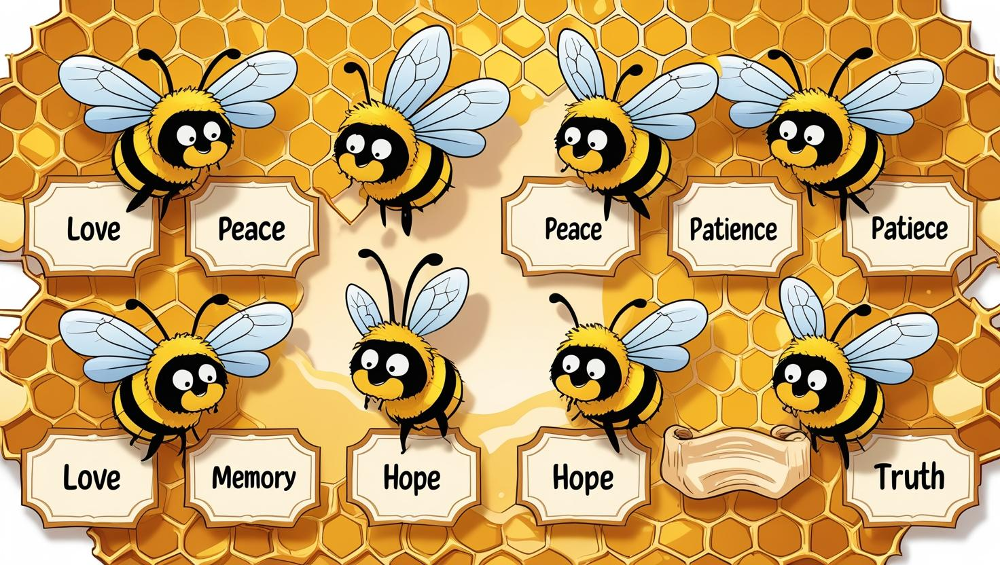

<section class="iconografia">
  <h2>🌿 Imágenes simbólicas</h2>

  <div class="icon-grid">
    <figure class="icon-item">
      
      <figcaption>Lectura</figcaption>
    </figure>

    <figure class="icon-item">
      
      <figcaption>Abejorro</figcaption>
    </figure>

    <figure class="icon-item">
      
      <figcaption>Reflexión</figcaption>
    </figure>

    <figure class="icon-item">
      
      <figcaption>Logo</figcaption>
    </figure>

    <figure class="icon-item">
      
      <figcaption>Portada</figcaption>
    </figure>
  </div>
</section>

<style>
  .iconografia {
    text-align: center;
    padding: 40px;
    background-color: #FFF6E5;
  }

  .iconografia h2 {
    font-family: 'Pacifico', cursive;
    color: #2A9D8F;
    margin-bottom: 30px;
  }

  .icon-grid {
    display: flex;
    flex-wrap: wrap;
    justify-content: center;
    gap: 30px;
  }

  .icon-item {
    width: 120px;
    text-align: center;
  }

  .icon-item img {
    width: 80px;
    border-radius: 8px;
  }

  @media (max-width: 600px) {
    .icon-grid {
      flex-direction: column;
      align-items: center;
    }

    .icon-item {
      margin-bottom: 20px;
    }
  }
</style>
